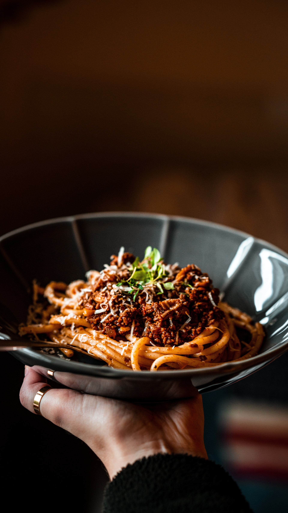

Spaghetti alla Bolognesa

Description
Our quick and easy spaghetti Bolognese recipe is an Italian classic with a rich tomato-based sauce. Prepared in just 10 minutes, this delicious spaghetti Bolognese is the perfect midweek dinner for a family of four.
Ingredients
- 2 medium onions, peeled and chopped
- 1 tbsp olive oil
- 1 garlic clove, peeled and crushed
- 500g lean minced beef
- 90g mushrooms, sliced
- 1 tsp dried oregano or mixed herbs
- 400g can tomatoes or chopped tomatoes
- 300ml hot beef stock
- 1 tbsp tomato ketchup or purée
- 1 tbsp Worcestershire sauce
- Salt and ground black pepper
- 350g spaghetti
- Freshly grated Parmesan, to sprinkle
Steps
- Put the onion and oil in a large pan and fry over fairly high heat for 3-4 mins.
- Add the garlic and mince and fry until they are both brown.
- Add the mushrooms and herbs, and cook for another couple of mins.
- Stir in the tomatoes, beef stock, tomato ketchup or purée, Worcestershire sauce, and seasoning.
- Bring to the boil, then reduce the heat, cover, and simmer, stirring occasionally, for 30 mins.
- Meanwhile, cook the spaghetti in a large pan of boiling, salted water, according to packet instructions.
- Drain well, run hot water through it, put it back in the pan, and add a dash of olive oil, if you like, then stir in the meat sauce.
- Serve in hot bowls and hand round Parmesan cheese, for sprinkling on top.